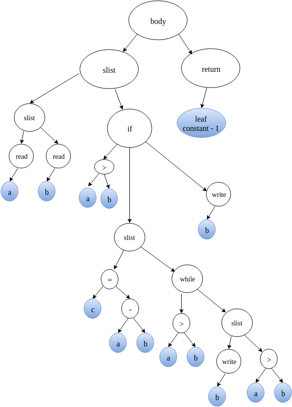

Data Structures
Download as PDF
Type Table
The Type Table stores all the necessary information regarding the various user defined types in the source program. The compiler creates an entry in the Type Table for each user defined type. In addition to this, there are default entries created for primitive types (int, str) and special entries null, boolean and void for the internal purposes of the interpreter. The default and special entries are made beforehand whereas entries for user defined types are made as the Type Declaration Section of the source code is parsed.
Structure
The structure of Type Table is as follows:
The variable 'fields' is a pointer to the head of 'fieldlist'. Here 'fieldlist' stores the information regarding the different fields in the case of a user-defined type.
Associated Methods
- void TypeTableCreate() : Function to initialise the type table entries with primitive types (int,str) and internal data types (boolean,null,void).
- struct Typetable* TLookup(char *name) : Search through the type table and return pointer to type table entry of type 'name'.
- struct Typetable* TInstall(char *name, struct Fieldlist *fields) : Creates a type table entry for the type of 'name' with given 'fields' and returns the pointer to the type table entry.
- void FInstall(char *name, struct Typetable *type) : Adds a fieldlist entry with given 'name' and 'type'.
- struct Fieldlist* FLookup(char *name, struct Fieldlist *list) : Searches for a field of given 'name' in the given 'fieldlist' (of some user-defined type) and returns a pointer to the matching entry.
Illustration
Let us consider the following sample code:
- The type table is first created and initialised to contain the default entries for each of the primitive and internal datatypes. This is done through a call to the function TypeTableCreate() from main function before yyparse() is called to start parsing the code. After the execution of TypeTableCreate() , the type table will be as follows:

- As soon as the compiler encounters the declaration of a user defined type, it is installed into the type table. Subsequently the fields are attached to this type table entry. For instance, in the case of the user-defined type linkedlist, as soon as the name linkedlist is encountered, a type table entry with 'name' set to linkedlist and 'fields' set to NULL is created. Later, on finishing the complete parse of the type definition, the fieldlist is created and it is attached to the type table entry.
NOTE : A type table entry is created as soon as the type name is seen. This is because a field of the type may be of same type (For example, just like next is of type linkedlist in the type definition of linkedlist). When the 'fieldlist' is created, the type of the field is set by looking up the type table.
- Similar actions are carried out for user-defined type marklist also.

- Once the type declaration section is completely parsed, the type table is fully created and will not be further modified or updated.
Symbol Tables
Symbol tables are used to store information pertaining to the variables and functions in a program.
Global Symbol Table
The global symbol table stores information pertaining to all the global variables and functions in an ExpL program.
Structure
The structure of Global Symbol Table(GST) is as follows:
✛NOTE: In the case of a compiler, fbinding must store the starting address of the function's code in memory. A call to the function must translate into an assembly level call to the function's code in memory. Hence, in this case fbining has to be an integer storing a memory address.
Arglist is used to store information regarding the types and names of the arguements. ArgStruct has the following structure.
Read about ASTNode here.
Associated Methods
- struct Gsymbol* GInstall(char *name,struct Typetable *type, int size, struct ArgStruct *arglist) : Creates a Global Symbol object of given 'name', 'type', 'size' and 'argument list' and assigns a 'binding' to the variable.
- struct Gsymbol* GLookup(char *name) : Search for a GST entry with the given 'name', if exists, return pointer to GST entry else return NULL.
Illustration
Continuing with earlier example, let us add Global declaration section to it.
- As soon as the compiler encounters the global declaration of a variable or funtion, it is installed into Global Symbol Table. Subsequently, the arguments are attached to the entry in case of functions. Following is how GST looks when studentname is installed.

-
Similarly for rollno,average,findaverage(linkedlist marks), symbol table entries are formed and installed. The fbinding for a function is the abstract syntax tree of the function definition and is set only after complete parsing of the function definition.

- After this, the types for rollno,average and findaverage will be set and these objects are appended to the global symbol table. The final Global Symbol table looks as follows:

Local Symbol Table
In addition to the global symbol table, the ExpL compiler maintains a separate local symbol table for each function for storing information regarding the functions arguments and local variables. Each function has its own list of local variables. So each function has its own LST.
Structure
Associated methods
- struct Lsymbol* LInstall(char *name,struct Typetable *type) : Creates a local symbol tbale with given 'name' and 'type' and also sets its 'binding'.
- struct Lsymbol* LLookup(char *name) : search the LST and if any entry with given 'name' is found ,return the entry,else returns NULL.
Arrays cannot be local variables, so we don't need to store the size of a variables. Also nested functions are not allowed in ExpL, so we don't require fbinding and arglist as in Gsymbol. The LST is formed for the Local Declaration Section in the same way GST was created for the Global declaration section.
Memory is allocated for local variables of a function from a seperate memory area called the stack. Hence, the binding for a local variable is the relative address of the variable with respect to the base of the Activation Record. The Base Pointer points to the base of an activation record of a function. The binding is added to the Base Pointer to obtain the address of variable in stack. This will be explained in detail later.
Abstract Syntax Tree
The machine independent front-end phase of a compiler constructs an intermediate representation of the source program called the Abstract Syntax Tree (AST). An interpretter will evaluate the AST whereas a compiler will run a machine dependent back-end to generate a target assembly language program. The following structure may be used to represent a node of the AST.
The union Constant is used to store the value of an integer or sting constant.
Associated methods
- struct ASTNode* TreeCreate (struct Typetable *type,int nodetype,char *name,union Constant value,struct ASTNode *arglist,struct ASTNode *ptr1, struct ASTNode *ptr2, struct ASTNode *ptr3) Creates a node with the fields set according to the arguements passed.
- regindex evaluate(struct ASTNode *t) Evaluation of an AST node results in a value. A compiler generates code for evaluating an AST node and assigns the result of evaluation to a register. An interpreter directly evaluates the AST node and simulates the compiler by storing the result in an array (called reg) and returning the index. We make use of the following structure to store the results of evaluation by an interpreter:
In 'valstruct' the field 'valtype' can take one of the following values:
- EMPTY : Indicates that no value is stored in it.
- INT : Indicates that value stored in the union constant 'value' is an integer.
- STR : Indicates the value stored in the union constant 'value' is a string.
- H_INDEX : Indicates that valstruct stores the (integer) index of a location in the heap.
Illustration
Consider the following program
The abstract syntax tree for the above program will look as follows precisely.
RUN TIME DATA STRUCTURES
A compiler must accurately implement the abstractions embodied in the source language definition. Names,scope, bindings, data types, operators, flow-control constructs are some of the abstractions. Compiler creates and manages a run-time environment in which a variety of issues such as allocation of storage locations for the objects named in the source program, the linkages between procedures, the mechanisms for passing parameters.From the perspective of compiler writer, the executing target program has its own logical address space in which each program value has its location. Following is the representation of run-time memory.

Stack and heap are dynamic, their size changes as the program executes. We will discuss these structures in detail.
Stack
The stack is used to store data structures called activation records that are generated during procedure calls.An activation record is used to store the information such as value of program counter and machine registers when a function call occurs. When control of returns from the function call, the activation of the calling procedure can be restarted after restoring the relevant registers and setting program counter to the point immediately after the call. Also, data of objects whose lifetime are contained in that of an activation can be allocated on the stack along with other information associated with activation.
Structure
So, for the implementation of the interpreter, we create a stack which is an array of memstruct. Memstruct has the following structure.
NOTE : for compiler, the stack structure and functions supported functions depends and is taken care of by the target machine.
The type field in memstruct can take the following values
- MEMSTRUCT_EMPTY : Indicates no value is stored in it.
- MEMSTRUCT_INT : Indicates that it stores an integer value.
- MEMSTRUCT_STR : Indicates that it stores a string value.
- MEMSTRUCT_BIND : Indicates that it points to a location in heap,i.e, the intval field in the union constant value stores the index of heap array location it points to.
- MEMSTRUCT_SIZE : Indicates that this memstruct is the first index of the allocated block for a dynamically allocated variable, and it stores the size of the block allocated for the variable.
Associated methods
- void push(struct valstruct *v) : pushes the values in valstruct to stack accordingly.
- struct valstruct* pop() : pops a value on top of the stack as a valstruct.
- void load(struct memstruct *m, struct valstruct *v) : loads the values in stack location pointed by m to the value structure v
- void store(struct memstruct *m,struct valstruct *v) : stores the values in value structure v to the stack location pointed by m.
NOTE : valstruct and memstruct structures have been used here to keep the fine line between a value object and a object in the memory.
Heap
A storage allocation decision can be static or dynamic. A decision is dynamic if it can be decided only while the program executes. In simple terms, consider the previous example, the size of the linkedlist marks is not known at the compile time, its size is only known at the run-time when we read in the count of subjects.
In interpreter, for heap we will be using an memstruct array of size 1024.
Associated methods
- void intialise() : To initialise the heap with required initial values.
- int alloc(int size) : allocates continuos locations of given size and returns the starting address of allocated block.
- int free(int addr) : frees the memory block starting with the given addr are erasing the data in that block and returns a value indicating the success and failure of free operation.
Allocation algorithms
The two types of allocation-deallocation algorithms we will discuss here for heap management are fixed memory and buddy memory management.
Fixed Memory Allocation
In this algorithm, the chunk size allocated is fixed. Lets call the fixed size as HB_SIZE, say 8. The heap is considered here as a list of blocks of HB_SIZE.
The first block in the list is reserved. Initially, The first index of reserved block stores the index of first free block. The first index of every free block stores the index of next available free block. The last block stores -1 in the first index. This is how it looks initially(after the call to initialise function).

Following is the allocation algorithm.
- First index of reserved block is checked, let the value be v.
- If v is -1, return -1 indicating no free blocks are available.
- Else, allocate the free block at v, after copying the next free block index stored at v to the reserved block.Return v.
Following is the pseudo code of the algorithm.
NOTE : heap is an array of memstructs.
Following is the deallocation algorithm.
- The arguement passed : starting address of the block(say s) to be deallocated
- The block s is cleared by setting all memstructs in the block to type MEMSTRUCT_EMPTY.
- The value in the first index of reserved block is copied to first index of block s.
- The first index of reserved block is set with starting address of block s.
Illustration
This section shows how the heap looks after each step of allocation or free. This is for the better understanding of the algorithms.
-
x = alloc();

x is a memstruct in the run-time stack of type MEMSTRUCT_BIND with intval 8.
-
y = alloc();

-
z = alloc();

-
dealloc(x);

-
dealloc(z);

-
z = alloc();

Buddy Memory Allocation
In this technique, memory is divided into partitions to try to satisfy a memory request as suitably as possible. This technique makes use of splitting memory into halves to try to give a best-fit.
Every memory block in this technique has an order, a number ranging from 0 to a specified upper limit. The size of block of order n is 2n. So the blocks are exacly twice the size of blocks of one order lower. Power-of-two block sizes makes address computation simple, because all buddies are aligned on memory address boundaries that are powers of two. When a larger block is split, it is divided into two smaller blocks, and each smaller block becomes a unique buddy to the other. A split block can only be merged with its unique buddy block, which then reforms the larger block they were split from.
Starting off, the size of the smallest possible block is determined, i.e. the smallest memory block that can be allocated. The smallest block size is then taken as the size of an order-0 block, so that all higher orders are expressed as power-of-two multiples of this size. In our implementation, we consider the smallest memory block size to be 8. So, the memory block sizes will be 8, 16, 32, 64, and so on. In our implementation, we take the heap of size 1024.
In our implementation, we have a heap of size 1024. The smallest block size possible in the heap is 8 (order 0). The highest block size of 2n that is free is 1024.We maintain a free list for all possible block sizes. So we have freelists for sizes 8,16,32,64,128,256,512 and 1024, i.e, we maintain eight freelists.
- We have only one block of size 1024 and so the size of freelist for 1024 is 1(20).
- In the 1024 sized heap, we have two blocks of size 512. Note that, both blocks cannot be free at the same time. If both blocks are free, they will be merged to a free block of size 1024(whose information will be maintained in the freelist for blocks of 1024 size). So at a time, maximum number of blocks that are free of size 512 is 1 ( 20).
- Similarly in case of blocks of size 256, 1024 sized heap has 4 blocks of size 256 (say a,b,c and d in their respective order).a and b are buddies of each other, of which both cannot be free at a time due to merging, so only one of them can be free. Similarly in case of c and d, only one of them can be free. 1 + 1 , 2 ( 21) is the maximum size of free list for blocks of 256.
- Similarly, there are 8 blocks of 128 in 1024 (a,b,c,d,e,f,g and h). (a,b)(c,d)(e,f)(g,h) are buddy pairs and only one of each pair can be free. So the maximum size of freelist for blocks of 128 is 4 ( 22).
- Similarly, the maximum size of freelist for blocks of sizes 64,32,16 and 8 are 8 ( 23),16( 24),32( 25) and 64( 26) respectively.
We will maintain the freelist inside the heap, So initially we won't have the complete heap of 1024 free. So we need not require a freelist for size 1024. We will store the complete freelist in a 128 sized block. Therefore, initially we have the first 128 block(0-127) of the heap reserved for freelist maintainence. Then we have a 128 sized free block(128-255), then a 256 block(256-511) and then a free block of 512 size(512-1023). Following is the diagrammatic representation of the heap initial status.

The free-list in the heap has to be initialised as above. Also, the first index of each allocated block through alloc function will store the size of allocated block. This is to figure out the size that has been allocated when the dealloc function is called for a variable, which provides only the starting address of the block that has been allocated.
Following is the allocation algorithm : (argument : Request for a block of size 'A')
- Look for a memory slot of suitable size(i.e, the minimal 2k block that is larger or equal to that of the requested memory A + 1, a plus one as first index is used to store the size of block allocated), lets call the ceiled size as 'B'.
- If found, the starting index of the allocated block is returned to the program after removing it from the freelist.
- If not, it tries to make a suitable memory slot by following the below steps
- Split a the next larger suitable free memory slot into half.(Remove the next larger suitable free memory slot from it free list and add both the halves to the corresponding freelist).(Note : of there is no larger free memory slot - return -1 indicating that no free space is available).
- If the required size 'B' is reached, one of the halves is allocated to the program.
- Else go to the step a and repeat it until the memory slot of required size 'B' is found.
Following is the deallocation algorithm (arguement : the starting address of the allocated block)
- Get the size, say 's' of the block from the first index of the block. Free the complete block with the help of size obtained by setting all the memstruct type to MEMSTRUCT_EMPTY.
- Check if the buddy of the block is free by checking the whether the buddy's starting address is present in the free list for blocks of size 's' .
- If the buddy is not free, add the current freed block to its free list.
- If the buddy is free, remove the buddy from the freelist and combine the two, and go back to step 2 to check for the buddy of merged block. Repeat this process until the upper limit is reached or buddy is not free.
The psuedo code for alloc and dealloc functions is as follows :
Illustration
For a better understanding purpose, we will have a simple illustration of how heap memory looks like through a set of some allocations and deallocations.
For illustration, we will have 64-sized heap and smallest block size as 8. So we free lists for sizes 8,16 and 32 of lengths 4 ,2 and 1. So we will use a 8-size block to store the free-list.
-
The heap looks initially as follows.

-
Request for memory of size 5. Lets call this request as A. The nearest 2^k value for 5 is 8. We search for a 8 sized free block. We have one such! Allocate it!

-
Next we will have a reuqest B of size 14.

-
Now we have a request C of size 7.


-
Now, C releases its memory.